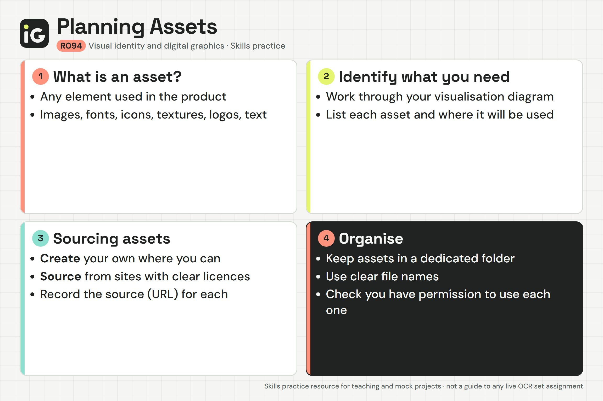

Where from?
- Client images and logos
- Stock libraries
- Internet (filtered by licence)
- Your own photos/graphics

Turn your visualisation into an asset plan and collect everything you need.
Use this checklist to make sure you can cover every part of this topic.
Filter searches by size, type and licence, check each stock library's terms, and copy downloads from your downloads folder into your working asset folder.